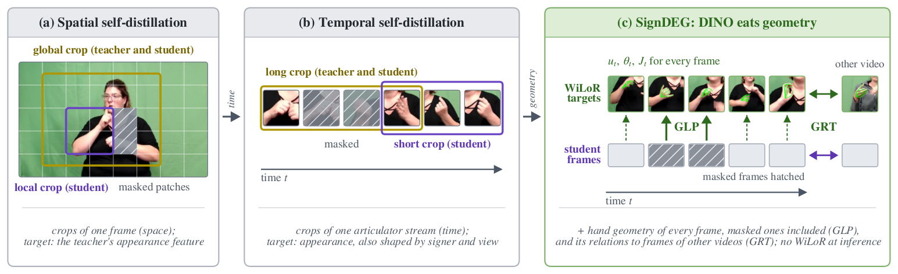
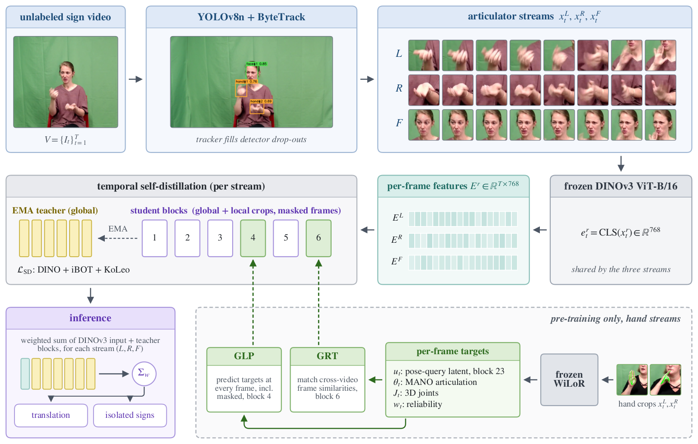
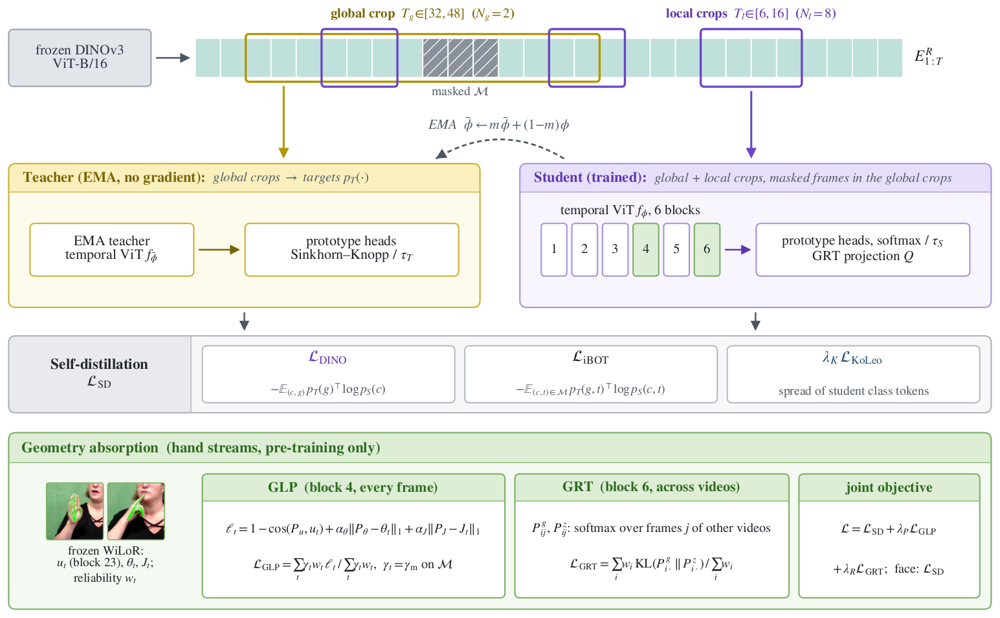
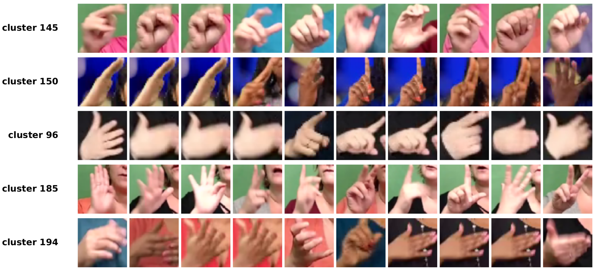
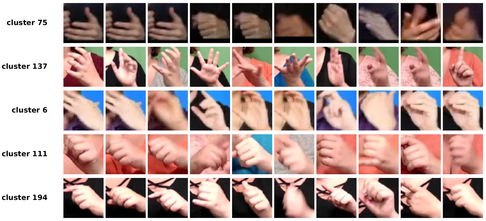
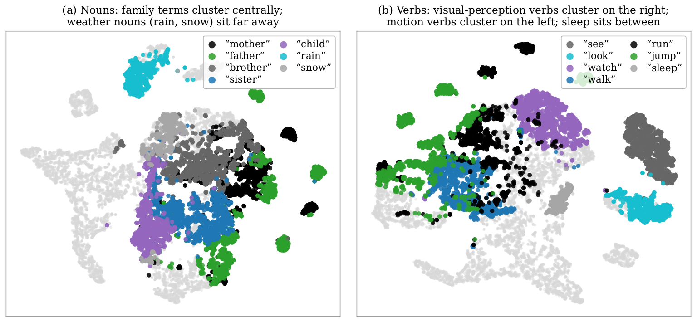

DINO Eats Geometry: Self-Supervised Sign Representations
that Absorb Articulated Hand Geometry
New York University Abu Dhabi
† corresponding author · jh10472@nyu.edu

What a hand expresses lies largely in its articulated state: which fingers are selected, how they bend, how the palm is oriented. Encoders that learn from appearance alone see this state only indirectly, because appearance similarity also follows viewpoint and the person in the frame. Hand reconstruction models estimate the articulated state explicitly, but running one at deployment adds a second model to every video. SignDEG uses that geometry only as a pre-training target.
Frozen DINOv3 features of tracked hands and faces feed per-stream temporal Transformers trained by temporal self-distillation. Geometric latent prediction (GLP) supervises an intermediate block with WiLoR latents, MANO articulation and 3D joints, including at masked frames. Geometric relation transfer (GRT) matches cross-video frame-similarity distributions at the final block. Both objectives are learned jointly with self-distillation; WiLoR and the geometry heads are then discarded, so the encoder runs on video alone.
We evaluate on American Sign Language. Under the SHuBERT public-data evaluation protocol, SignDEG reaches 17.9/24.5 BLEU-4 on How2Sign/OpenASL, compared with 16.2/23.2 for SHuBERT. Rank-1 adaptation improves ASL Citizen and Sem-Lex recognition by 0.02 Recall@1 each, and phonological classification improves across 16 attributes. Removing GRT while retaining GLP reduces How2Sign BLEU-4 by 1.4 and ASL Citizen Recall@1 by 0.034.
Block 4 of the student predicts the WiLoR latent, MANO articulation and 3D joints of every frame, masked frames included, weighted by a per-frame reliability score.
At the last block, the student's similarity distribution over frames of other videos is matched to the one induced by the geometric targets.
The deployed encoders are the EMA teachers on DINOv3 features; the hand reconstruction model and every geometry head are removed.
A YOLOv8n detector and ByteTrack follow the left hand, right hand and face of each video, and a frozen DINOv3 ViT-B/16 maps every crop to its 768-d class token once. Each stream has its own 10.8M-parameter temporal Transformer (6 blocks, width 384), trained by self-distillation between a student and its EMA teacher. The two hand streams additionally receive the geometric objectives.

Each sample draws two long (global) and several short (local) temporal crops. The teacher sees the global crops; the student sees all crops, with a random subset of frames in its global crops replaced by a learned mask embedding. The objective combines a crop-level DINO cross-entropy, its frame-level iBOT counterpart at masked frames, and a KoLeo regulariser; teacher distributions are normalised by Sinkhorn–Knopp iterations.
For every available hand crop, a frozen WiLoR supplies the geometric latent u (the mean of
its 16 MANO pose-query tokens after backbone block 23, standardised), the 15 local finger-joint rotations
θ in 6D, and the wrist-relative 3D joints J. Per-frame regressors fail on blurred
and interacting hands, and such failures appear as abrupt jumps in θ; each frame is therefore
weighted by the detector score, tracker state, WiLoR validity and a temporal-smoothness term.

All results follow the SHuBERT public-data evaluation suite: the ≈984-hour YouTube-ASL source split with OpenASL evaluation clips replaced by non-overlapping YouTube-SL-25 videos, and SHuBERT's target splits, task heads, metrics and downstream schedules. SignDEG entries are means over three seeds; baselines are published results.
| Method | PT hrs | How2Sign BLEU | How2Sign BLEURT | OpenASL BLEU | FLEURS-ASL BLEU |
|---|---|---|---|---|---|
| YouTube-ASL fine-tune | 984 | 12.4 | 46.6 | — | — |
| YouTube-SL-25 | 3207 | 15.4 | 47.9 | — | 4.4 |
| SSVP-SLT | 1054 | 15.5 | 49.6 | — | — |
| Uni-Sign | 984 | 14.9 | 49.4 | 23.1 | — |
| SHuBERT | 984 | 16.2 | 49.9 | 23.2 | 4.7 |
| SignDEG (frozen encoders) | 984 | 16.8 | 50.4 | 23.6 | 4.9 |
| SignDEG (live fine-tune) | 984 | 17.9 | 51.3 | 24.5 | 5.3 |
| Method | Trainable | ASL Citizen R@1 | Sem-Lex R@1 | WLASL2000 P-I | ASL-STEM mIoU |
|---|---|---|---|---|---|
| I3D | 25M | 0.63 | — | — | — |
| SignCLIP | 217M | 0.60 | 0.30 | — | — |
| Uni-Sign | 580M | — | — | 63.52 | — |
| SHuBERT (rank-1 LoRA) | 0.17M | 0.65 | 0.54 | 60.90 | 0.40 |
| SignDEG (rank-1 LoRA) | 0.11M | 0.67 | 0.56 | 66.9 | 0.41 |
| SignDEG (full fine-tune) | all | 0.704 | 0.593 | 68.5 | 0.43 |
The controls below hold the image backbone, crops, encoder capacity, 984-hour source split, 450K updates and downstream schedules fixed, and change only the pre-training objective.
| Objective / placement | How2Sign BLEU | ASL Citizen R@1 |
|---|---|---|
| Self-distillation (SD) only | 15.6 | 0.642 |
| SD + GLP | 16.5 | 0.670 |
| SD + GRT | 16.4 | 0.665 |
| SD + GLP + GRT (GLP at block 4) | 17.9 | 0.704 |
| SD + GLP + GRT (GLP at block 6) | 17.2 | 0.690 |
A frozen retrieval diagnostic uses human handshape labels instead of WiLoR: ASL Citizen queries retrieve training clips while the query signer and the query lexical sign are excluded.
| Frozen representation | Handshape P@5 | Articulation R² |
|---|---|---|
| Raw DINOv3 | 0.41 | 0.44 |
| SD only | 0.49 | 0.48 |
| SD + GLP | 0.55 | 0.54 |
| Full SignDEG | 0.61 | 0.56 |
Sixteen classifiers for ASL-Lex 2.0 categories test whether the representation preserves sub-lexical structure. On Sem-Lex, Handshape improves from 62.93 to 71.16, Selected Fingers from 79.53 to 89.94, and Spread from 79.42 to 90.99. These labels are independent of WiLoR.
| Mean over 16 features | Sem-Lex R@1 | ASL Citizen R@1 |
|---|---|---|
| SHuBERT | 79.38 | 85.02 |
| SignDEG | 87.64 +8.26 | 91.85 +6.83 |



The method code — articulator streams and feature extraction, pre-training with GLP and GRT, and the translation, recognition and fingerspelling models — is on GitHub under the MIT licence. Configurations follow the paper.
git clone https://github.com/junyi2005/signdino.git
cd signdino && pip install -r requirements.txt
# synthetic smoke test, no data needed
python train.py --config configs/signdeg_hand.yaml --synthetic-smoke --max-steps 20
# pre-training of one hand stream on a FeatureStore (see README)
torchrun --nproc_per_node 4 train.py --config configs/signdeg_hand.yaml --stream rh \
--store /path/to/store_source --output-root runs/ssl
Datasets and third-party models (DINOv3, WiLoR and MANO, ByT5-Base, the YOLOv8n detectors) are not redistributed; obtain each from its official release under its own terms.
@article{hu2026signdeg,
title = {{DINO} Eats Geometry: Self-Supervised Sign Representations that Absorb
Articulated Hand Geometry},
author = {Hu, Junyi and He, Zhewen and Huang, Haomian and Li, Zhenhua and
Yuan, Shuaihang and Li, Zhifei and Fang, Yi},
journal = {arXiv preprint arXiv:2609.06296},
year = {2026}
}